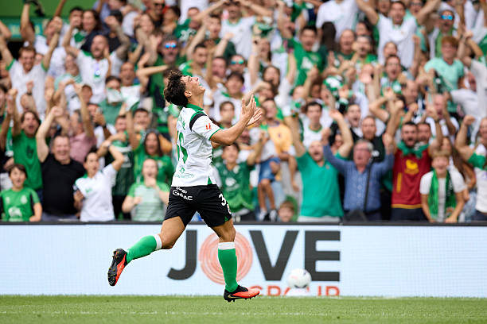
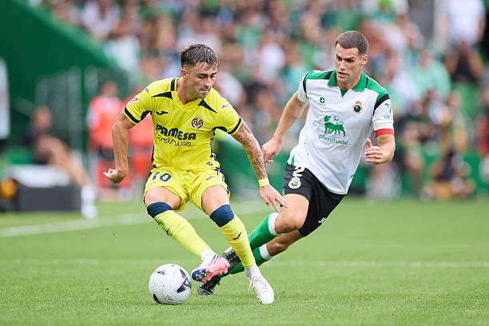
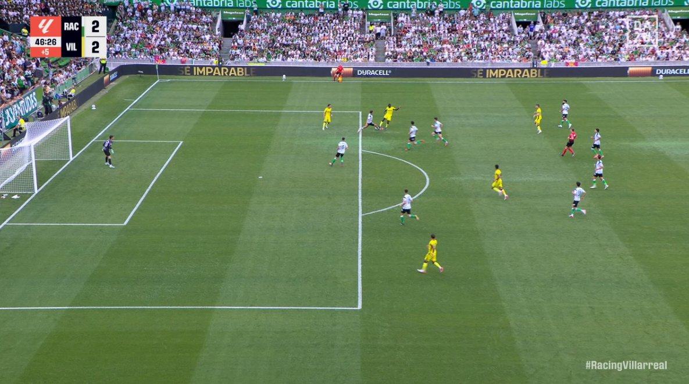
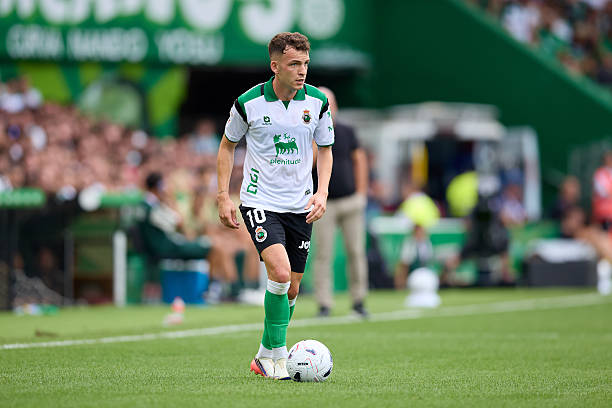

Tras su ascenso a primera división, el Real Racing Club de Santander debutaba nuevamente en LaLiga 14 años después y en El Sardinero.
Las entradas se agotaron y el estadio lleno a reventar vio como su equipo sumaba el primer punto de la temporada ante un equipo de Champions League como el Villarreal.
La primera parte del partido fue una oda al fútbol de antaño, idas y venidas, un partido loco y cuatro goles en cuarenta y cinco minutos. El Racing salía con un once con hasta cuatro futbolistas formados en la Albericia como son Mantilla (C), Jorge Salinas, Sergio Martínez y Sergio Canales.
Alineación del Racing de Santander: En portería debutaba Julen Agirrezabala con la elástica racinguista, la defensa formada por Mantilla, Pedro Felipe, Pablo Ramón y Jorge Salinas, en el centro del campo Gustavo Puerta, Canales y Sergio Martínez, y arriba Andrés Martín, Íñigo Vicente y Villalibre.
Alineación del Villarreal: En portería Luiz Junior, en la defensa Santiago Mouriño, Juan Foyth, Renato Veiga y Carlos Romero, en la sala de máquinas Pape Gueye, Comesaña y Alberto Moleiro y arriba Nicolas Pépé, Ayoze Pérez y Mikautadze.

El partido ya se decidió en esta primera mitad, con un Villarreal que quiso probar al conjunto local en los primeros minutos y vio como no se dejaron amedrentar, tanto, que a los veinte minutos Santi Comesaña cometió un penalti sobre Jorge Salinas que fue revisado en el VAR, Andrés Martín convirtió el primer gol del Racing en esta temporada sobre los once metros.
Minutos antes, el Racing perdería a su nuevo defensa Pedro Felipe, con una rotura muscular en la pierna derecha.
No estaba siendo el debut ideal de Íñigo Pérez bajo los mandos del submarino amarillo, diez minutos después, el chaval formado en la Albericia, Sergio Martínez convirtió un golazo desde fuera del área que dejó con la boca abierta hasta a los aficionados del Villarreal, el canterano lo celebró entre lágrimas y con su gente, un debut soñado y en el que habrá que prestar mucha atención a su futuro como futbolista.
Si el Villarreal va a jugar Champions por segundo año consecutivo, por algo será, y es que tiene un equipazo y lo quería dejar claro, en un minuto el submarillo amarillo metería dos golazos para empatar el encuentro, el primero lo haría el campeón de la Copa África, Pape Gueye, disparo desde la frontal del área ajustado al palo.
El segundo sería una obra de arte, pero no debió subir al marcador por fuera de juego de Mikautadze, pero la liga del señor Tebas permitió que el charrazo de Nicolas Pépé subiese al marcador.
Tras esto los dos equipos se fueron al descanso en busca de dar la vuelta al marcador y sumar los primeros 3 puntos de la temporada.

Tras una primera parte loca, la segunda tocaba ser más calmada, perfecto para los que tienen problemas del corazón, ninguno de los dos equipos supieron materializar las ocasiones que tuvieron, aún así pudimos ver destellos de calidad de jugadores como Iñigo Vicente y Sergio Canales, los buques insignia del equipo cántabro.
Al final los dos equipos firmaron el reparto de puntos y ya preparan su siguiente encuentro liguero, dejando buenas sensaciones ambos equipos, aunque el Racing ligeramente superior con el contexto de ser un recién ascendido y querer jugar su fútbol sin importar la categoría y rival.
